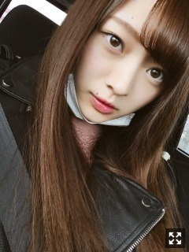
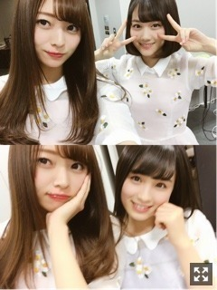
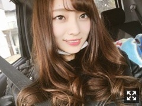
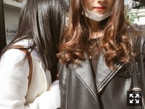
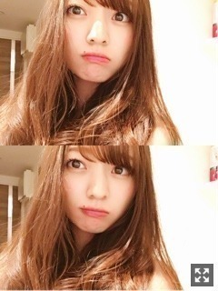

夜と朝の狭間。梅澤美波
みなさまこんにちは！！
乃木坂46 ３期生の
梅澤美波です！
ひな祭りー！！桃の節句！！

服は基本黒が多い( ¨̮ )モノクロすき
でも最近は色んなジャンルチャレンジします
夜から朝にかけての空気がすき
でも朝から夜になる時の空もすき
とりあえず空がすき( ¨̮ )
見学させていただきました
涙が止まらなかったです。
あんなに何万人もの方に愛されて
必要とされて、
一緒に感情を共有できて、
本当にすごいことだなって。
橋本さんが口にする言葉は
素敵な言葉すぎて胸にグサグサ刺さって
涙がとまらなくって。
私も橋本さんのような格好いい女性になりたい
って、心の底から思いました。
一緒にお仕事させてもらったことは無かったけど、
お忙しい中プリンシパルを見に来てくださったり
楽屋で優しい言葉をかけてくださったり、
妹たちみたいって言ってくださったり、
本当に優しくて素敵な先輩でした。
あの大きい背中をもっと見ていたかった
乃木坂46に
少しでも力になれるよう頑張ります！
橋本さんが、幸せでいられますように。
本当にお疲れ様でした！
私は応援してくださる方と
私が乃木坂を卒業するまでの間
たくさんの思い出を作りたいって
すごく思いました
当たり前じゃない時間を大切にしたい！！
私これからもめちゃくちゃ頑張るので
ずっと見ててね( ¨̮ )
３期生では、
人はなぜ走るのか？
強がる蕾
羽根の記憶
ハルジオンが咲く頃
白い雲にのって
ハウス！
を披露させていただきました。
３期生としてこの曲を披露させていただいた意味、
私があの場所に立たせていただいた意味をすごく考え
舞台に立ちました。
ステージに立つことの想いが
めちゃくちゃ強かったから
自分なりに今までの自分を超えられるよう頑張りました。
何か伝わっていたらいいな〜( .. )
コメントで、たくさんのお声がけ本当にありがとうございます。全部読みました！
力になります。
ステージから見る皆さんの笑顔、
サイリウムはすごく素敵で綺麗な景色で
ここにいられて幸せだな
こんなステージに立てる人生って素敵だなって
改めてすごく思ったんです！
緊張したけど、すごく最高な景色だった！！
先輩方の背中を追いかけながら
先輩方と一緒に、ずっとこの素敵な景色を見ていたい
そう思いました！がんばる！

みづきとももこ
ハルジオンの衣装大好きです！
個人的に紫顔かなって思ってたから
ピンク似合うかなって不安でした( .. )
大丈夫かな？？
青×水色サイリウム、
梅澤美波推し のタオルたくさん見つけました！
とてつもない安心感がある
本当にありがとう
先輩方がおいでーってやってくれたり、
戻る時も一緒に戻ってくれたり、
楽屋でも、
たくさんの先輩方が声をかけてくださったんです。
そんな先輩方が私の目指す場所であり、憧れです。
17thシングル、インフルエンサーのカップリングに
私たち3期生の曲
三番目の風 収録させていただきます。
初めて聴いた時、びびっときた！
あ、この曲好きだ！タイプだ！って
レコーディング、MV撮影、
全てのことが初めての景色でした
大好きな乃木坂46のために活動する毎日が
本当に幸せです。
こんなにたくさんの経験をさせていただけて
本当に嬉しいです。
私たちに一つ一つくださる試練を
乗り越えて期待に応えたい！
新内さんのオールナイトニッポンで
初OAされました！！
いかがでしたか？？
へい！って掛け声たくさんあるから
盛り上がりそうだな〜って( ¨̮ )
気に入ってくれたら嬉しいです☺︎
私が歌ってるとこ分かった人〜！！
とても大切な曲
先日、高校の卒業式でした！
もう私も大人に１歩近づいたかな？
制服ももうコスプレです( .. )
(20代に見られるから現役でも制服に違和感は感じていたよ( .. ))
なんだか寂しいな〜
〜
同じく卒業された方、おめでとうございます！
個別握手会、
3次で完売と聞いて本当に嬉しくって涙出ました（ ｉ _ ｉ ）
本当にありがとうございます！（ ｉ _ ｉ ）
私に会いに、私のために
握手券取ってくださる方がいるって
本当に本当に嬉しい！！
絶対に楽しい握手会にします！
私の所へ来てくれたこと、
絶対後悔させません！
楽しみましょうね( ¨̮ )
全会場で5部が追加されたので
気になっている方、ぜひ（ ｉ _ ｉ ）！！

すっごい楽しみだよ〜わくわくしてる
あ、ヒールは履かない方向で考えてます！
だから身長とか気にせず会いに来てほしい！
わたしは全然気にしないので！
そんなこと感じさせないくらい楽しい握手にしたい！
実際会うとそんなおっきく見えないって
お見立て会の時結構言われたんだよ( .. )（笑）
身長の壁なんて壊したい！
長所にできるように頑張るから、見ててほしい
１部２部は、朝早くてごめんね（ ｉ _ ｉ ）
パワーあげるね！！
服装もテーマ変えて色々したいなって思ってます！
ちゃんとメモしてるからね☺︎
はやく会いたいな〜
質問返し☺︎
A.ももっぴとアサイーと牛タン食べに行きました！！念願の牛タン！！アサイーは私オススメのお店に連れていきました( ¨̮ )その後お買い物行って、牛タンたべました！幸せだったなあ〜。服の趣味も合うから楽しい！、

いつもくっついてきます( ¨̮ )
歩く時も( ¨̮ )
(これ写真とってるの気づいてないのでリアルです)
Q.落ち込んだ時にすることは？
A.することは特になくて、落ち込むとずっと落ち込んでます。ずっとそのことを考えてどうしたらいいんだどうしてだ〜ってずっと自分を攻め続けます。私ネガティブなので( ¨̮ )（笑）参考にならなくてごめんね（ ｉ _ ｉ ）
Q.好きな天気は？
A.冬の晴れ好き！だけど夏の晴れはあまり好きじゃない( .. )雨は好きじゃないけど雨の匂いがすき！曇りの天気もすき( ¨̮ )選べない( ¨̮ )（笑）
Q.田舎派？都会派？
A.どちらも違った良さがあるなって思います！私はどちらかと言うと田舎で育ったのとおばあちゃん家がかなりの田舎なので、自然な空気が大好きです！電灯が無くて、真っ暗の中、綺麗に見える星空をずっと見てるのもすき( ¨̮ )けど、都会を夜、車で走った時の窓から見る景色が好きだし、都会の夜景がすき( ¨̮ )選べない( ¨̮ )（笑）

うざい顔
これめちゃくちゃ髪明るく見えますね( ¨̮ )
髪の毛色落ちするの早すぎるんだけど
どうしたらいいの〜
内容盛りだくさんすぎてごちゃごちゃ
で読みにくくてごめんなさい( .. )
それじゃ、また次回〜
ばいばいっ
私は私のペースで
比べてしまうのが癖だけど
皆さんを想えばへっちゃら！
目指したい場所があるから
頑張ります
Original：https://www.nogizaka46.com/s/n46/diary/detail/37173?ima=0531&cd=MEMBER